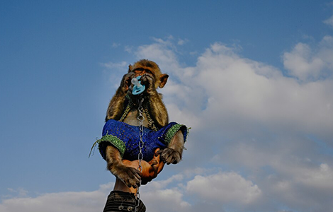
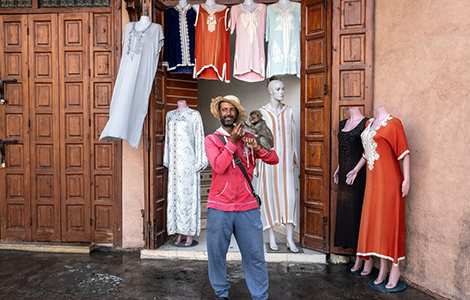
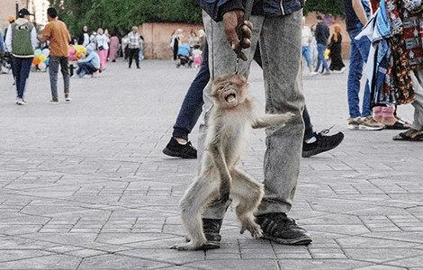
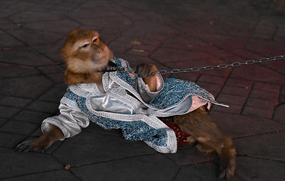
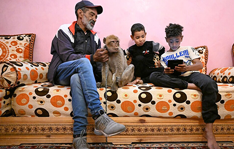
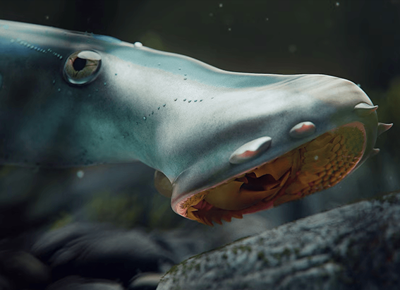

NATIONAL GEOGRAPHIC
These macaques are used for entertaining. They’re also endangered.
ANIMAL
- 
- 
- 
- 
- 
MARRAKECH, MOROCCOIn Jemaa el-Fnaa, the raucous main square in Marrakech, street merchants shout special prices for argan oil and wooden camel figurines. Smoke wafts from food stalls, and motorbikes veer dangerously near pedestrians. Amid the clamor is Cookie, a six-month-old Barbary macaque wearing a cream-colored lace bonnet that makes him look like a human infant. Around his neck is a leather collar connected to a metal chain he keeps tugging at to break free.
Sharla Bonneville, a first-time visitor to Marrakech from Toronto, Canada, exchanges a wary glance with one of her friends as they walk past Cookie and two more macaques with their handlers on this Friday evening in March. Ignoring the men’s importunings to stop and watch their monkeys do tricks, they continue moving through the crowd.
“It’s quite upsetting,” Bonneville says, referring to the chained monkeys. “My friends and I aren’t interested in seeing these animals in captivity.”
Barbary macaques are native to the Barbary Coast, the historic name given to coastal regions of North Africa. They’re the only macaque species found outside Asia and the only non-human primate living in the wild north of the Sahara. With fewer than 10,000 remaining, the International Union for Conservation of Nature lists them as endangered, at risk of disappearing from the wild within a decade.
Keeping a macaque as a pet in Morocco is illegal and can lead to a fine of up to $10,000 except in Jemaa el-Fnaa, where at least 17 people have permits allowing them to use the animals as tourist attractions. That’s all according to Zouhair Amhaouch, the director of the Parks and Nature Reserves Division, in Morocco's National Agency for Water and Forests.
In 2008, Morocco’s Ministry of Interior submitted Jemaa el-Fnaa, with its fortune tellers, henna tattoo artists, and macaque performers, to UNESCO for consideration to be listed as a cultural heritage site. UNESCO said in a statement to National Geographic, however, that it “does not insist on maintaining the monkeys since the square involves many other forms of intangible cultural heritage."
“The number one reason people come to the square is to see a show,” says Adil Ouadrhiri, who owns six macaques, including Cookie, and employs four handlers. “We’re here to entertain people, and they want to see monkeys.” Ouadrhiri’s family has worked here with Barbary macaques since the 1970s.
In pairs, his handlers take either the morning or the afternoon shift. Ouadrhiri says each handler makes about $120 a day in tips and that he and they divide the day’s take equally.
Primatologist Kristina Stazaker, with U.K.-based Neotropical Primate Conservation, estimates that some handlers may earn much more than that. When she visited Jemaa el-Fnaa for a study funded by the International Primate Protection League, which is headquartered in South Carolina, she spent the day observing the action from a cafe and says she tallied one macaque used as a photo prop 18 times in just one hour. Generally, she says, tips are up to $10.
‘Sensitive creatures’
When left to their own devices in the wild, Barbary macaques naturally form social groups of 30 to 80 individuals. They’re “sensitive creatures,” says conservationist Siân Waters, the executive director of Barbary Macaque Awareness & Conservation, another U.K.-based nonprofit, dedicated to conserving the animals and their habitat.
Barbary macaques, males included, form close caretaking bonds with their infants. When the females aren’t nursing, males often carry the babies through the forest on their backs, even risking their lives to protect them. When parents aren’t preoccupied with their babies, they forage for tasty nuts, plants, and insects and spend time grooming each other.
“You can’t domesticate primates,” Waters says. Monkeys kept as pets and made to perform tricks suffer from psychological trauma that manifests in extreme aggression, repetitive movements, and self-mutilation, as well as physical damage that may be irreversible, she says. Macaques kept in cramped cages, she notes, can also suffer from musculoskeletal problems that impair their mobility and flexibility.
Waters says she’s seen some handlers in Jemaa el-Fnaa beating their macaques and that her organization regularly receives messages from tourists horrified by abusive treatment of the monkeys, claiming the animals are being hit, dragged in chains, forced to wear clothing, spend the entire day in hot temperatures without shade, and then kept in cramped quarters when they aren’t working.
The problem is widespread, Waters says, though National Geographic and Waters did not witness Zaaboul or Enouiti ever hitting their macaques, and Waters never received any messages claiming that they’d abused the animals. Waters also didn’t notice any obvious musculoskeletal problems with their specific monkeys.
But despite what Ouadrhiri says about tourists wanting a show, Stazaker says that when she and her colleagues surveyed around 500 visitors to Jemaa el-Fnaa about the monkeys they were seeing in the square, “we found that most of them really disliked it. We were hearing people use words like ‘horrible,’ ‘cruel,’ and ‘disgusting.’” Only a small fraction of the surveyed tourists 16 percent responded that they liked it and that getting to see the macaques was “fun” and “a rare opportunity.”
Comments :
- john Very good
- john Very good
Leave a Reply
Your email address will not be published. Required fields are marked*
Related posts:
-
Why is there a Vitamin K but no Vitamin F
Vitamin C for a cold? A good dose of Vitamin D on a sunny day? We all know that vitamins are critical for our health, but how did they get their names and, more importantly, when were they discovered in the first place?
View article -
This 160-million-year-old fish gouged out its victims’ flesh
Lampreys have been feeding on flesh and blood since the depths of prehistory. These jawless, eel-like creatures have suctioning discs lined with teeth for mouths, which many modern species use to latch
View article -
COVID-19 can interfere with your period in many ways. Here's how.
Raven La Fae, a 32-year-old artist in Calgary, Canada, has always been able to predict their menstrual periods almost to the day; it arrived every 28 days and lasted for five. But after contracting COVID-19 in late 2020,
View article